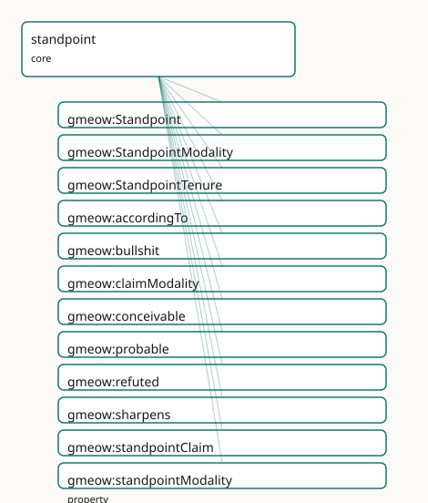

GMEOW Standpoint Module
- IRI: https://blackcatinformatics.ca/gmeow/slices/standpoint
- Tier: core
Group: core
What This Slice Covers
This slice owns 16 terms and contributes 11 mapping or projection rows. Use it when its terms match the native fact you want to preserve; use the linkage tables to see how those facts leave GMEOW for consumer vocabularies.
Dependencies
Consumers
- Every contested fact and every model disagreement (P9); the statement layer; the deception slice.
Local Map

Examples
Contested Authorship
- Source:
slices/core/standpoint/examples/contested-authorship.ttl - GMEOW terms:
gmeow:CreativeWork,gmeow:Person,gmeow:Standpoint,gmeow:StandpointClaim,gmeow:claimModality,gmeow:methodComputationalModel,gmeow:methodExpertJudgement,gmeow:name,gmeow:observationMethod,gmeow:observationResult
# SPDX-FileCopyrightText: 2026 Blackcat Informatics® Inc. <paudley@blackcatinformatics.ca>
# SPDX-License-Identifier: CC-BY-4.0
#
# Worked example: contested claims coexist, none privileged (, P9). Two
# scholars attribute the same play to different authors. Each attribution is a
# reified gmeow:StandpointClaim (a kind of Observation) carrying its own
# gmeow:vantage (whose standpoint), gmeow:observationResult (the claimed author),
# and gmeow:claimModality (HOW the standpoint holds it). A third standpoint does
# something flat models cannot express: it gmeow:refuted the Marlowe attribution
# — an explicit DENIAL, distinct from mere silence. There is no "preferred"
# author: the graph keeps every standpoint's stance side by side.
@prefix gmeow: <https://blackcatinformatics.ca/gmeow/> .
@prefix ex: <https://blackcatinformatics.ca/gmeow/examples/standpoint/> .
ex:play a gmeow:CreativeWork ;
gmeow:title "The Contested Tragedy"@en .
ex:marlowe a gmeow:Person ; gmeow:name "Christopher Marlowe"@en .
ex:shakespeare a gmeow:Person ; gmeow:name "William Shakespeare"@en .
# --- Standpoints: the scholarly positions from which each claim is held.
ex:revisionists a gmeow:Standpoint ; gmeow:sharpens gmeow:universalStandpoint .
ex:orthodoxy a gmeow:Standpoint ; gmeow:sharpens gmeow:universalStandpoint .
ex:forensicPanel a gmeow:Standpoint ; gmeow:sharpens gmeow:universalStandpoint .
# --- Claim 1: the revisionists hold (probably) that Marlowe wrote it.
ex:claimMarlowe a gmeow:StandpointClaim ;
gmeow:vantage ex:revisionists ;
gmeow:observedFeature ex:play ;
gmeow:observationResult ex:marlowe ;
gmeow:observationMethod gmeow:methodExpertJudgement ;
gmeow:claimModality gmeow:probable .
# --- Claim 2: the orthodoxy holds (settled) that Shakespeare wrote it.
ex:claimShakespeare a gmeow:StandpointClaim ;
gmeow:vantage ex:orthodoxy ;
gmeow:observedFeature ex:play ;
gmeow:observationResult ex:shakespeare ;
gmeow:observationMethod gmeow:methodExpertJudgement ;
gmeow:claimModality gmeow:unequivocal .
# --- Claim 3: a stylometric panel REFUTES the Marlowe attribution — settled
# false, an explicit denial rather than silence. It coexists with claim 1.
ex:refuteMarlowe a gmeow:StandpointClaim ;
gmeow:vantage ex:forensicPanel ;
gmeow:observedFeature ex:play ;
gmeow:observationResult ex:marlowe ;
gmeow:observationMethod gmeow:methodComputationalModel ;
gmeow:claimModality gmeow:refuted .
Terms
Classes
| Term | Label | Definition |
|---|---|---|
gmeow:Standpoint |
Standpoint | A named perspective / frame within which claims are held true — a state's official position, a community's usage, an editorial or historiographic point of view... |
gmeow:StandpointModality |
Standpoint Modality | The belief value a standpoint assigns a proposition — a closed value vocabulary spanning the Standpoint-Logic □/◊ and the CRMinf belief value (true/false/proba... |
gmeow:StandpointTenure |
Standpoint Tenure | The reified, time-scoped fact that a standpoint held a particular position over an interval — recognition granted in 2008 and withdrawn in 2030 is an opened-th... |
Properties
| Term | Label | Definition |
|---|---|---|
gmeow:accordingTo |
according to | The standpoint / frame within which the annotated statement is asserted true — according to whom. DISTINCT from gmeow:wasAttributedTo (which source RECORDED... |
gmeow:claimModality |
claim modality | The modality (unequivocal, probable, conceivable, refuted, bullshit) assigned to a StandpointClaim. Semantically equivalent to observationResult for Standpoint... |
gmeow:sharpens |
sharpens | S1 sharpens S2: every precisification S1 admits is also admitted by S2, so S1 is the more specific frame (the standpoint ⊆ / refinement relation of Standpoint... |
gmeow:standpointClaim |
standpoint claim | The StandpointClaim observation that a StandpointTenure generates — the reified observation of the tenure's time-scoped fact. The tenure is the time-scoped sit... |
gmeow:standpointModality |
standpoint modality | The belief value a standpoint assigns the annotated proposition — how the standpoint holds it, not merely that it holds it. This single axis is at least as... |
gmeow:tenurePosition |
tenure position | The standpoint-indexed claim the tenure says the standpoint held over its interval — a reified statement (a gmeow:StatementMetadata cell in the statement DSL).... |
gmeow:tenureStandpoint |
tenure standpoint | The standpoint whose position a standpoint-tenure records. When a StandpointTenure generates a StandpointClaim observation, the tenureStandpoint becomes the va... |
Individuals
| Term | Label | Definition |
|---|---|---|
gmeow:bullshit |
bullshit (indifference to truth) | The standpoint asserts P with indifference to its truth-value — Frankfurt's bullshit modality. Distinct from lying (which cares about truth and asserts the opp... |
gmeow:conceivable |
conceivable (◊, possible) | ◊_S — possible according to the standpoint: the proposition holds in some precisification the standpoint admits, but is not settled (CRMinf belief value 'possi... |
gmeow:probable |
probable | Likely true according to the standpoint — held more strongly than merely possible, but short of settled (CRMinf belief value 'probable'). |
gmeow:refuted |
refuted (□¬, false) | □¬_S — settled false according to the standpoint: the standpoint DENIES the proposition (CRMinf belief value 'false'). Distinct from silence (no claim) and fro... |
gmeow:unequivocal |
unequivocal (□, true) | □_S — settled / necessary true according to the standpoint: the proposition holds in every precisification the standpoint admits (CRMinf belief value 'true').... |
gmeow:universalStandpoint |
universal standpoint (*) | The universal standpoint * — the top of the poset, admitting every precisification: the uncontested global facts every standpoint shares. A statement with no g... |
Linkages
- Rows: 11
- Projection profiles: -
- External vocabularies:
crminf,dul,iptc,prov,sosa,wd
| Source | Kind | Profile | Predicate/Relation | Target | Evidence |
|---|---|---|---|---|---|
gmeow:Standpoint |
equivalence | - |
skos:relatedMatch | dul:Description | gmeow-standpoint.sssom.tsv; gmeow:eqStandpoint012; confidence 0.4 |
gmeow:Standpoint |
equivalence | - |
skos:relatedMatch | iptc:Assertor | gmeow-standpoint.sssom.tsv; gmeow:eqStandpoint018; confidence 0.5 |
gmeow:Standpoint |
equivalence | - |
skos:relatedMatch | prov:Agent | gmeow-standpoint.sssom.tsv; gmeow:eqStandpoint010; confidence 0.4 |
gmeow:StandpointModality |
equivalence | - |
skos:closeMatch | crminf:I6_Belief_Value | gmeow-deception.sssom.tsv; gmeow:eqDeception005; confidence 0.6 |
gmeow:StandpointTenure |
equivalence | - |
skos:relatedMatch | crminf:I2_Belief | gmeow-standpoint.sssom.tsv; gmeow:eqStandpoint004; confidence 0.6 |
gmeow:accordingTo |
equivalence | - |
skos:relatedMatch | prov:wasAttributedTo | gmeow-standpoint.sssom.tsv; gmeow:eqStandpoint001; confidence 0.4 |
gmeow:accordingTo |
equivalence | - |
skos:relatedMatch | wd:P3680 | gmeow-standpoint.sssom.tsv; gmeow:eqStandpoint006; confidence 0.55 |
gmeow:bullshit |
equivalence | - |
skos:relatedMatch | crminf:I6_Belief_Value | gmeow-standpoint.sssom.tsv; gmeow:eqStandpoint023; confidence 0.5 |
gmeow:claimModality |
equivalence | - |
skos:closeMatch | crminf:J5_holds_to_be | gmeow-standpoint.sssom.tsv; gmeow:eqStandpoint017; confidence 0.6 |
gmeow:claimModality |
equivalence | - |
skos:closeMatch | sosa:hasResult | gmeow-observations.sssom.tsv; gmeow:eqObs041; confidence 0.75 |
gmeow:standpointModality |
equivalence | - |
skos:relatedMatch | crminf:J5_holds_to_be | gmeow-standpoint.sssom.tsv; gmeow:eqStandpoint008; confidence 0.6 |
Guide
Standpoint — alignment & projection reference
The alignment and projection companion to the standpoint doctrine.
Everything here is authored once in mapping-dsl/ and generated by
gmeow compile-mappings (Principle 4); nothing in mappings/, projections/, or
queries/projections/ is hand-edited.
Terms
| Term | Kind | Role |
|---|---|---|
gmeow:accordingTo |
owl:AnnotationProperty |
the standpoint axis — according to whom a statement holds |
gmeow:standpointModality |
owl:AnnotationProperty |
the belief value: unequivocal (□/true), probable, conceivable (◊/possible), refuted (□¬/false) — spans Standpoint-Logic and CRMinf belief values |
gmeow:Standpoint |
class (gufo:Kind) |
a named perspective/frame (often a bare gmeow:Agent instead) |
gmeow:sharpens |
transitive object property | the standpoint ⊆ / precisification order |
gmeow:universalStandpoint |
individual | the universal standpoint * (the default for unindexed claims) |
gmeow:StandpointTenure |
class (gufo:Situation) |
reified standpoint-time (a position held over an interval) |
SSSOM alignments (mapping-dsl/equivalences/standpoint.ttl)
All by reference (Principle 5) — GMEOW never imports an external axiom. Compiled to
mappings/gmeow-standpoint.sssom.tsv.
| GMEOW | Predicate | Target | Note |
|---|---|---|---|
gmeow:accordingTo |
skos:relatedMatch |
prov:wasAttributedTo |
standpoint ≠ source — a neutral source can record a partisan claim |
gmeow:StatementMetadata |
skos:relatedMatch |
np:Nanopublication |
a reified statement-with-provenance is a nanopublication minus the PID |
gmeow:StatementMetadata |
skos:relatedMatch |
crminf:I4_Proposition_Set |
the reified base triple is the proposition a belief is about |
gmeow:StandpointTenure |
skos:relatedMatch |
crminf:I2_Belief |
a temporal belief held over an interval (CRMinf I2 is itself temporal) |
gmeow:standpointModality |
skos:relatedMatch |
crminf:J5_holds_to_be |
the belief value (true/probable/possible/false) |
gmeow:StatementMetadata |
skos:relatedMatch |
wikibase:Statement |
GMEOW's reifier is Wikidata's statement node — but with no rank |
gmeow:accordingTo |
skos:relatedMatch |
wd:P3680 |
Wikidata "statement supported by"; its inverse "disputed by" (P1310) is just another coexisting claim in GMEOW |
gmeow:StatementMetadata |
skos:relatedMatch |
schema:Claim |
GMEOW refuses ClaimReview's single-verdict false-credibility |
gmeow:StatementMetadata |
skos:relatedMatch |
prov:Entity |
a reified claim is a provenance entity attributed to its standpoint agent |
gmeow:Standpoint |
skos:relatedMatch |
prov:Agent |
a standpoint is often (not always) the agent that bears an attribution |
gmeow:StatementMetadata |
skos:relatedMatch |
oa:Annotation |
body = the quoted triple, target = its subject, creator = the standpoint |
gmeow:Standpoint |
skos:relatedMatch |
dul:Description |
a standpoint is a DnS Description — a perspective/conceptualization |
gmeow:StatementMetadata |
skos:relatedMatch |
dul:Situation |
the claim is the DnS Situation that satisfies the standpoint's Description |
CRMinf parity. GMEOW is at least as expressive as the CIDOC-CRM Argumentation
model: the reified statement is an I4 Proposition Set, a StandpointTenure is a
temporal I2 Belief, the standpoint is the actor of an I1 Argumentation, and
standpointModality spans J5 holds to be (true/probable/possible/false) — so a
denial is first-class, not an absence. Carried by the generated CRMinf projection.
Formal grounding (set comment). gmeow:accordingTo is the axiom-level standpoint
label of Standpoint Logic (Standpoint EL, IJCAI 2023; Standpoint-OWL 2,
arXiv:2305.00559; Monodic-S5 over OWL 2 DL, KR 2025); modality = the □/◊ operators
plus the CRMinf belief values; sharpens = the standpoint ⊆ relation;
universalStandpoint = *. It also relates to CKR contexts, MVP-OWL multi-viewpoint
classes, and ClaiMaker source-anchored claims (documented in the set comment).
The Wikidata refusal (set trailer). GMEOW keeps Wikidata references/qualifiers as
relatedMatch targets but refuses wikibase:rank / wikibase:PreferredRank — a
preferred rank re-creates the single winning slot the edit war is fought over
(Principle 9). The refusal is recorded in the generated TSV, never emitted as a mapping.
Projections — every standpoint preserved, never a winner
The governing rule is no winner: GMEOW ships no projection that selects a
single standpoint, because collapsing a contested fact to a chosen frame re-creates
the single winning slot the facility abolishes (Principle 9). All five projections
below preserve every standpoint. Two are lossless (Standpoint-OWL 2, CRMinf);
the PROV-O, Web Annotation, and schema.org ones are perspective-preserving but lossy
on the belief value (a documented drop, not a winner-pick — every standpoint still
appears). (tests/test_standpoint.py asserts no frame-selecting executor exists.)
Standpoint-OWL 2 → queries/projections/standpoint-owl2.rq
Re-expresses every reified statement's accordingTo + standpointModality as the
standpointLabel encoding consumed by the reference translator
(cl-tud/standpoint-owl2 → HermiT):
Box for settled (□), Diamond for possible/probable (◊), the standpoint IRI as the
Standpoint name (* for the universal standpoint). The property IRI is
…/gmeow#standpointLabel — the tool matches any property ending in #standpointLabel.
Because this encoding labels an asserted axiom, a refuted (denied) claim cannot be
represented here without asserting what the standpoint rejects, so denials are excluded
from this projection and carried by the CRMinf one below. A standpoint-aware reasoner
runs per-standpoint and cross-standpoint consistency over the full graph.
CRMinf (CIDOC-CRM Argumentation) → queries/projections/standpoint-crminf.rq
Re-expresses every reified statement as an I1 Argumentation (P14 carried out by
the standpoint) that J2 concluded that an I2 Belief J4 that an
I4 Proposition Set, which J5 holds to be a belief value derived from
standpointModality — true / probable / possible / false. Because the
belief value is explicit, a denial (refuted) is carried faithfully and the
proposition is referred to (P67 refers to), never asserted as a fact. This is the
projection that makes GMEOW's at-least-as-expressive-as-CRMinf claim concrete.
Web Annotation → queries/projections/standpoint-oa.rq
Re-expresses every reified statement as an oa:Annotation: oa:hasBody the
(still-reified, never-asserted) quoted statement, oa:hasTarget its subject,
dcterms:creator the standpoint, oa:motivatedBy oa:describing. Perspective-
preserving (every standpoint becomes an annotation by its frame); lossy on the belief
value and confidence, like the PROV-O projection.
schema.org Claim → queries/projections/standpoint-schema.rq
Re-expresses every non-denied reified statement as a schema:Claim whose
schema:author is the standpoint and whose schema:text is the rendered proposition
(never the asserted base triple). Per-standpoint claims coexist — there is no single
schema:ClaimReview verdict, the false-credibility GMEOW refuses. A refuted (denied)
claim is excluded (a schema:author would misread denial as authorship) and
carried by the CRMinf projection. For the web / fact-check ecosystem.
PROV-O → queries/projections/standpoint-prov.rq
Re-expresses every reified statement as a prov:Entity (proposition kept reified,
never asserted) prov:wasAttributedTo its standpoint agent, with a
prov:qualifiedAttribution node naming the prov:agent. Every standpoint is
retained and none is privileged. It is the provenance lens: perspective-preserving
but lossy on the belief value (standpointModality) and confidence — those are
carried by the CRMinf and Standpoint-OWL 2 projections. Lossy-drop note (in the
generated header): belief value (modality) and confidence dropped; attribution
preserved. This is loss without winner-picking — every standpoint still appears.
Verified by construction
gmeow compile-mappings --check— no drift betweenmapping-dsl/and the generated artifacts (the Standpoint-OWL 2 executor included).gmeow lint-alignment— alignment-direction soundness over the SSSOM rows.tests/test_standpoint.py— no frame-selecting executor exists; the Standpoint-OWL 2 projection emits tool-compatibleBox/Diamondlabels and preserves the base axioms.